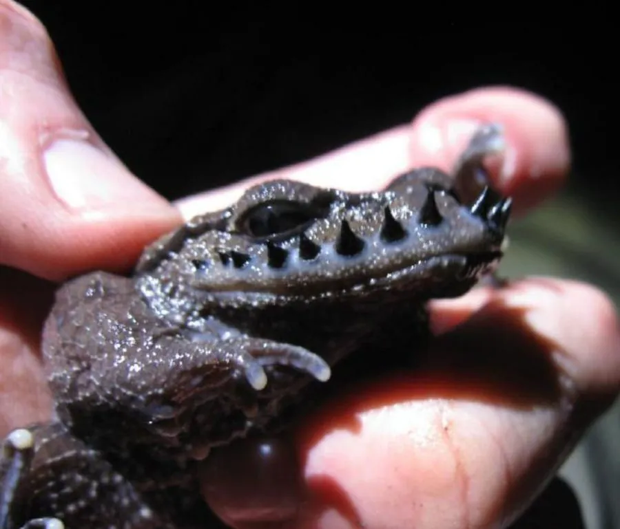

两栖动物 · 动物界
峨眉髭蟾 Leptobrachium boringii

中国西南山区的稀有两栖动物，繁殖期雄蛙上唇会长出一排黑色角质刺，像长了胡子，被列为国家二级保护动物。
- 分类
- 门脊索动物门纲两栖纲目无尾目科角蟾科属髭蟾属
- 栖息环境
- 海拔较高山区的常绿阔叶林、溪流与石缝
- 地理分布
- 中国四川、贵州、湖南等地的山区
- 保护级别
- IUCN 濒危（EN）；中国国家二级保护动物
物种志
峨眉髭蟾体长 7–9 厘米，身体较粗壮，头部宽扁，吻端圆钝，眼睛较大且瞳孔呈纵置状，背部呈深褐、灰黑或紫褐色，皮肤较光滑，四肢短粗；繁殖期雄蛙的上唇会长出一排黑色角质刺，形似浓密的胡须，“胡子蛙”“髭蟾”之名由此而来。
它分布于中国四川、贵州、湖南等地的山区，栖息于海拔较高的常绿阔叶林下的溪流附近，成体多藏在石缝、落叶层中，夜间捕食昆虫、蜈蚣和蚯蚓。每年 2–4 月繁殖，雌蛙在溪流石缝中产卵，卵群呈团状，蝌蚪在水中生活 2–3 年才变态。由于栖息地破坏和非法捕捉，峨眉髭蟾数量稀少，被列为国家二级保护动物，也是研究两栖动物性选择与繁殖行为的珍贵物种。
形态与习性
- 食性昆虫、蜈蚣和蚯蚓
- 体长7–9 cm
- 寿命约 8–12 年
- 繁殖卵生，蝌蚪在水中生活 2–3 年才变态
- 活动节律夜行性，成体多藏于石缝落叶中
- 特征繁殖期雄蛙上唇长出一排黑色角质刺
趣味知识
- 繁殖期的雄性峨眉髭蟾上唇会长出一排黑色角质刺，像长了胡子。
- 它的蝌蚪要在水中生活 2–3 年才完成变态，是发育期很长的蛙类。
- 峨眉髭蟾被列为国家二级保护动物，非法捕捉会触犯法律。